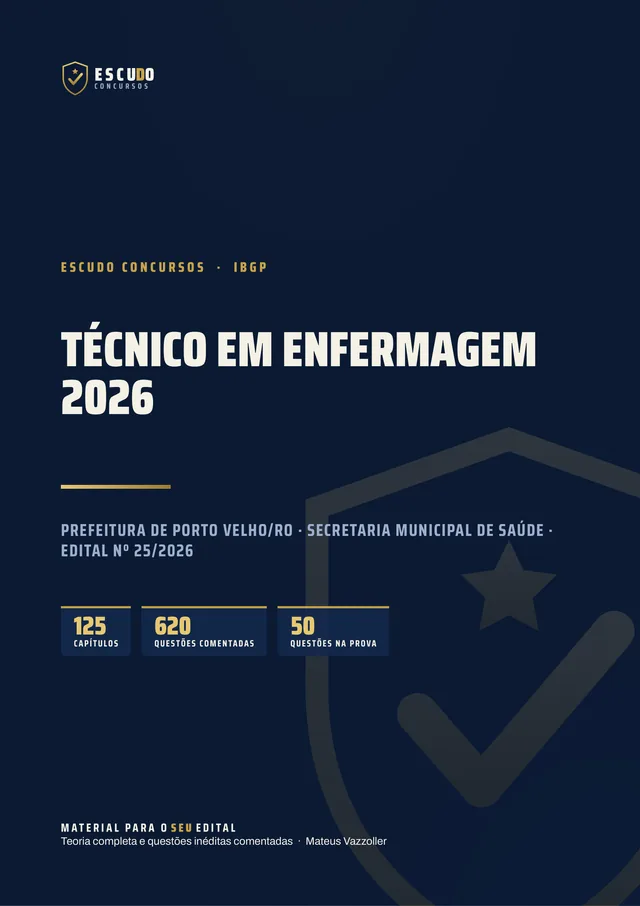
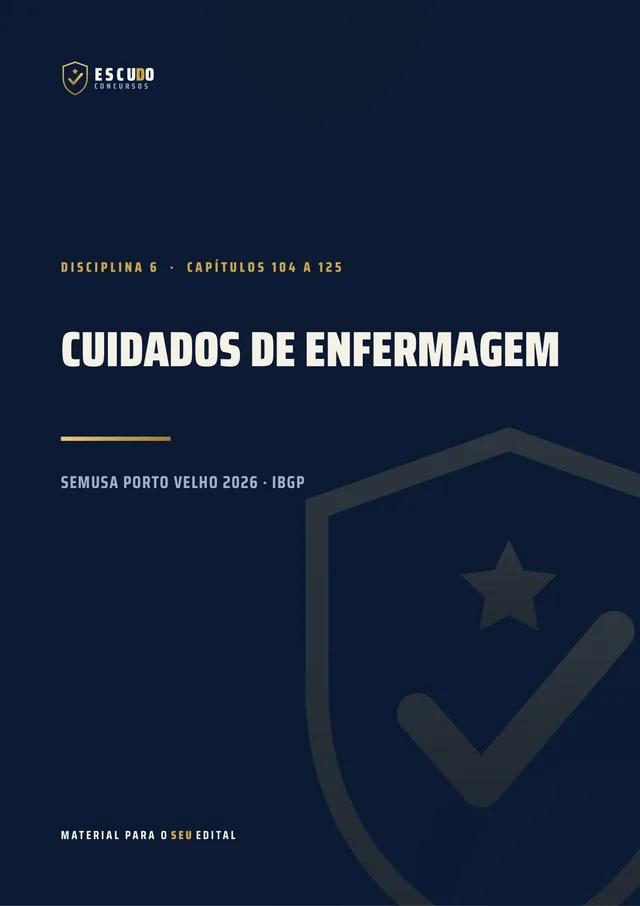
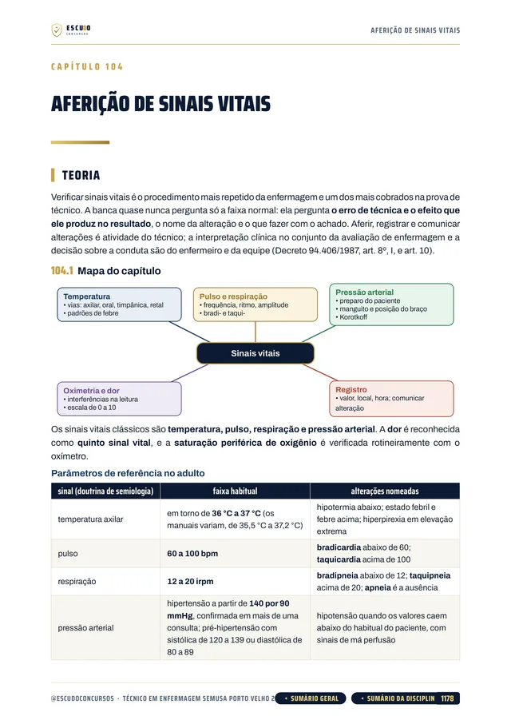
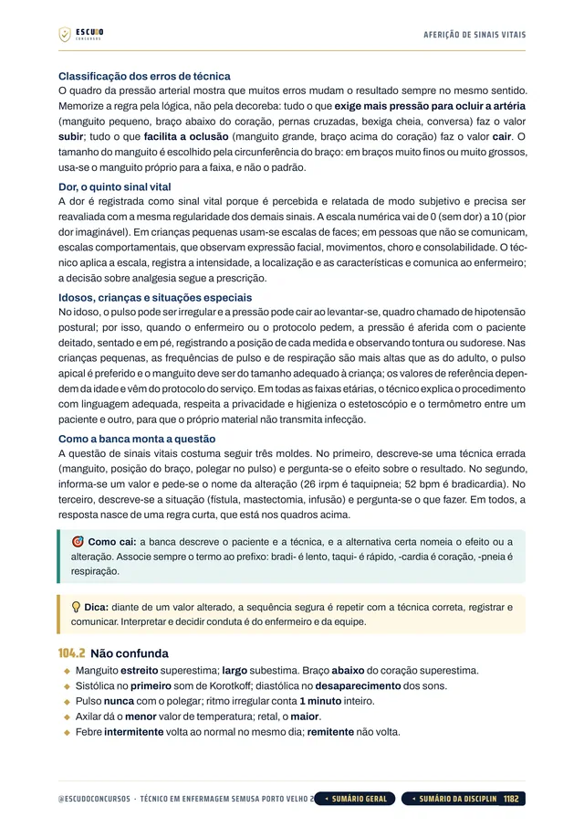
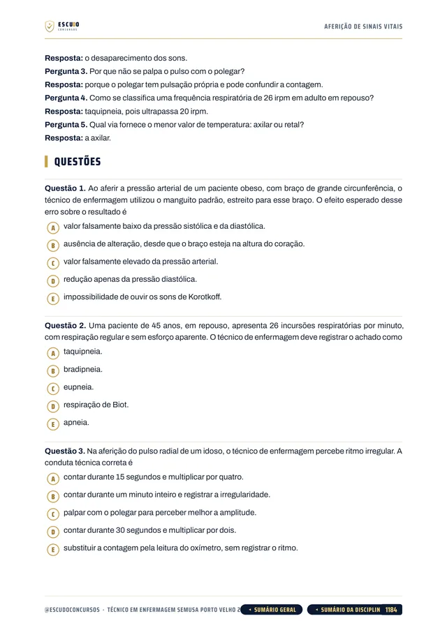
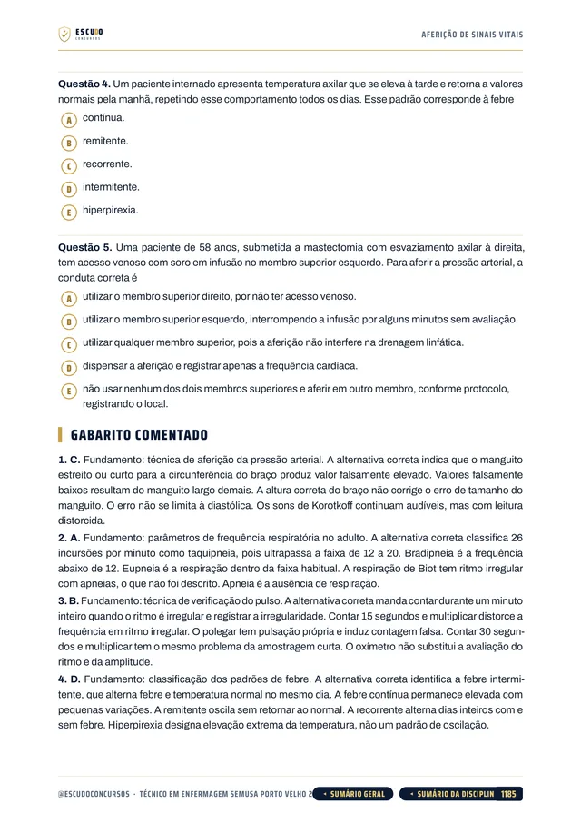

Simulado 1
No meio do caminho
Para medir onde você está e ajustar o estudo enquanto ainda dá tempo.
30 dias após a compra


620questões
comentadas
SEMUSA Porto Velho/RO 2026 · Curso em PDF
São 209 postos para Técnico em Enfermagem em Porto Velho/RO, 43 imediatos e 166 de cadastro de reserva. O seu material cobre o programa inteiro, das leis de Porto Velho aos cuidados de enfermagem? Curso feito a partir do Edital nº 25/2026, item por item, com questões de A a E, como na prova, e gabarito comentado.
de R$ 47 por
R$37
com o cupom TECNICO37 até 11/11/2026. Pelo botão, o cupom já vai preenchido.
R$47
Curso completo, com acesso imediato.
O concurso
O Concurso Público da Saúde do Município de Porto Velho/RO (Edital nº 25/2026) abriu, para Técnico em Enfermagem da Secretaria Municipal de Saúde, 43 vagas imediatas e mais 166 de cadastro de reserva, com vencimento de R$ 1.397,16 e jornada de 40 horas semanais. O cargo exige Ensino Médio completo, curso técnico em enfermagem e registro no Coren. As inscrições vão de 13 de outubro a 11 de novembro de 2026, até as 16h (horário de Rondônia), com taxa de R$ 105,00 e pagamento até 12 de novembro.
A prova do IBGP é em 13 de dezembro de 2026, um domingo, à tarde, das 14h45 às 17h45: só prova objetiva, 50 questões de 5 alternativas, de (A) a (E), com uma só correta.
Todas as 50 questões valem 2 pontos, e é aprovado quem fizer pelo menos 50 dos 100 pontos. Conhecimentos Específicos têm 15 questões (30 pontos); Língua Portuguesa, Raciocínio Lógico e Legislação, 10 cada.
| Disciplina | Questões | Pontos |
|---|---|---|
| Língua Portuguesa | 10 | 20 |
| Raciocínio Lógico | 10 | 20 |
| Conhecimentos Gerais e Atualidades | 5 | 10 |
| Legislação | 10 | 20 |
| Conhecimentos Específicos | 15 | 30 |
| Peso 2 em todas as questões. Aprovação com no mínimo 50% dos pontos da prova. | 50 | 100 |
O formato
Você estuda lendo, no seu ritmo, pela área de membros da Hotmart ou com os arquivos baixados. O curso foi feito a partir do Edital nº 25/2026, item por item, na ordem do conteúdo programático do Técnico em Enfermagem, com a legislação federal e de Porto Velho conferida no texto oficial vigente em 30/09/2026, a data do edital.
Páginas reais do PDF
Toque numa página para ver em tamanho maior.





O que você recebe
Curso em PDF organizado em módulos pelas disciplinas do edital, com 1.384 páginas no padrão visual ESCUDO, para ler no computador, no tablet, no celular ou no app da Hotmart. Não há videoaulas.
125 capítulos cobrindo as cinco disciplinas da prova: Língua Portuguesa (23 capítulos), Raciocínio Lógico (22), Conhecimentos Gerais e Atualidades (7), Legislação (35) e Conhecimentos Específicos (37, em SUS e legislação profissional e em cuidados de enfermagem), mais um capítulo de abertura sobre a prova.
620 questões inéditas com 5 alternativas, de (A) a (E), como na prova, todas com gabarito comentado: por que a correta está correta e onde está o erro de cada uma das outras quatro.
SUS e legislação profissional em 15 capítulos: a saúde na Constituição (arts. 196 a 200), princípios do SUS, Lei 8.080 em quatro capítulos, Lei 8.142, Decreto 7.508, planejamento do SUS, redes de atenção, atenção primária e vigilância em saúde, direitos dos usuários, Política Nacional de Humanização e controle social, indicadores e sistemas de informação, Lei 7.498/1986 com o Decreto 94.406/1987 e o Código de Ética da enfermagem.
Cuidados de enfermagem em 22 capítulos: sinais vitais, semiologia e semiotécnica, cálculo, preparo e administração de medicamentos, vacinação e calendário vacinal, feridas e curativos, oxigenoterapia, sondagens e lavagens, urgência e parada cardiorrespiratória, recém-nascido e criança (desidratação, desnutrição e parasitoses), hipertensão e diabetes, oncologia, saúde do trabalhador, doenças transmissíveis, biossegurança, IRAS e segurança do paciente.
Legislação em 35 capítulos: Lei Orgânica de Porto Velho, Regime Jurídico dos servidores (Lei 385/2010), Plano de Carreira da Saúde (Leis 390 e 391/2010), Estatuto da Pessoa com Deficiência, Constituição, Lei 14.133/2021 e acesso à informação, com o texto das leis de Porto Velho transcrito onde o número decide a questão.
Conhecimentos Gerais em 7 capítulos: história e geografia de Porto Velho e de Rondônia, símbolos e cidadania, atualidades do Brasil e do mundo de 2021 a 2026 e atualidades de Porto Velho e de Rondônia, com os dados com ano e fonte.
Caso prático na rotina da Secretaria Municipal de Saúde de Porto Velho em cada capítulo de conteúdo.
Teoria com recursos para memorizar: mapa de cada capítulo, fluxogramas, esquemas, quadros de "pegadinha" e "não confunda", questão comentada passo a passo, revisão relâmpago e teste de memória no fim de cada capítulo.
Navegação clicável: do sumário você vai direto ao capítulo, e volta pelo botão do rodapé.
2 simulados inéditos no formato exato da prova (50 questões de A a E, na ordem e na divisão do edital), cada um com caderno de comentários. O Simulado 2 é liberado na semana anterior à prova, para o seu último teste.
Área de membros
| Módulo | Conteúdo | Liberação |
|---|---|---|
| M0 Comece aqui | Apresentação + capítulo 001 (como é a prova e como usar o curso). Bônus: PDF completo para baixar e imprimir | Na compra; o PDF completo no 8º dia |
| M1 Língua Portuguesa | Capítulos 002 a 024 | Na compra |
| M2 Raciocínio Lógico | Capítulos 025 a 046 | Na compra |
| M3 Conhecimentos Gerais e Atualidades | Capítulos 047 a 053 | Na compra |
| M4 Legislação | Capítulos 054 a 088 | Na compra |
| M5 SUS e legislação profissional | Capítulos 089 a 103 | Na compra |
| M6 Cuidados de enfermagem | Capítulos 104 a 125 | Na compra |
| M7 Simulado 1 | 50 questões no formato da prova, caderno de comentários | 30 dias após a compra |
| M8 Simulado 2 | 50 questões no formato da prova, caderno de comentários | 06/12/2026 (7 dias antes da prova) |
Treino no formato da prova
Cada simulado tem 50 questões de A a E, no formato exato da prova, com caderno de comentários.
Simulado 1
Para medir onde você está e ajustar o estudo enquanto ainda dá tempo.
30 dias após a compra
Simulado 2
Liberado na semana anterior à prova de 13/12/2026.
06/12/2026
Para quem é
Para quem vai prestar Técnico em Enfermagem da Prefeitura de Porto Velho/RO em 13/12/2026 e quer estudar pelo programa do edital, com o tempo concentrado nos Conhecimentos Específicos, que valem 30 dos 100 pontos, e nas leis de Porto Velho.
Você tem 7 dias de garantia pela Hotmart. Se não for o que você esperava, pede o reembolso pela própria Hotmart, dentro do prazo.
Dúvidas
Não. É um curso 100% em PDF: teoria, questões comentadas e simulados para ler e resolver.
O acesso é imediato depois da confirmação do pagamento, pela área de membros da Hotmart (web ou app). O PDF completo para baixar e imprimir é liberado no 8º dia.
O Simulado 1 é liberado 30 dias após a compra. O Simulado 2 é liberado em 06/12/2026, uma semana antes da prova.
Em parte. Língua Portuguesa, Raciocínio Lógico, Conhecimentos Gerais e Legislação (35 das 50 questões) têm o mesmo programa para todo o nível médio e técnico. Os Conhecimentos Específicos do curso seguem só o programa do Técnico em Enfermagem.
Só prova objetiva, à tarde, com 3 horas: 50 questões de múltipla escolha com cinco alternativas, de (A) a (E), e uma só correta, todas com peso 2. As questões do curso seguem esse formato.
Não. As 620 questões de treino e as dos simulados são inéditas, escritas no formato do edital a partir do conteúdo programático do Técnico em Enfermagem.
Ensino Médio completo, curso técnico em enfermagem e registro no Conselho de Classe (Coren).
Você tem 7 dias de garantia pela Hotmart. Se não for o que você esperava, pede o reembolso.
SEMUSA Porto Velho/RO 2026 · Técnico em Enfermagem
de R$ 47 por
R$37
com o cupom TECNICO37 até 11/11/2026.
R$47
Curso completo, com acesso imediato.
Material para o SEU edital. ESCUDO Concursos.